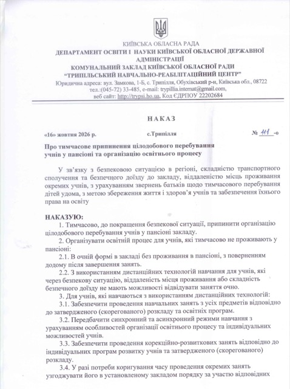
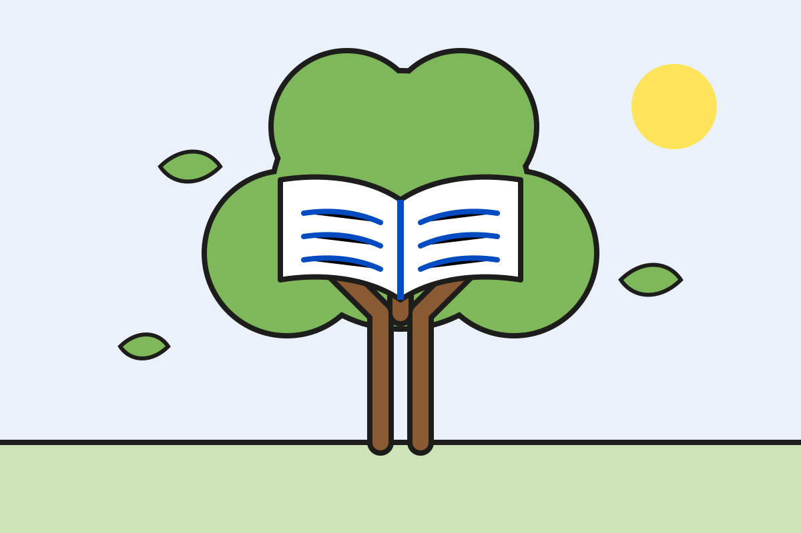

Допомагаємо кожній дитині ставати самостійною
Наш Центр — це простір, у якому навчання поєднується з корекційно-розвитковою та реабілітаційною роботою, турботою про здоров’я, безпеку, емоційний добробут і формування життєвої самостійності дитини.

Заняття з м’якими іграшками в ігровій кімнаті 
Заняття з педагогинею за столом
Швидкий доступ
Освітня програма
Чого і як навчаються діти в Центрі
Документи для зарахування
Що потрібно, щоб дитина почала навчання
Розклад уроків
Розклад на поточний навчальний рік
Новини
Події та життя Центру
Звіт директора
Річний звіт про діяльність закладу
Стоп булінг
Як ми запобігаємо цькуванню і куди звернутися
Методична робота
Педагогічна тема та професійний розвиток
Прозорість
Статут, кошторис, звіти та інші документи
Останні новини
Усі новини →-

Наказ про тимчасове припинення цілодобового перебування учнів у пансіоні та організацію освітнього процесу
Наказ від 16.10.2026 № 111-о: тимчасово припинено цілодобове перебування учнів у пансіоні; навчання — очно без проживання або з використанням дистанційних технологій.
-

Дистанційне навчання: розклади уроків і корекційно-розвиткових занять
Розклади уроків і корекційно-розвиткових занять для учнів, які навчаються дистанційно (моделі 3 і 4): групи І і ІІ, контакти відповідальних.
-
УВАГА! ВАЖЛИВО! Попередження онлайн-шахрайств
Кіберполіція проводить інформаційну кампанію щодо попередження онлайн-шахрайств: фінансові операції в Інтернеті, фішинг, інтернет-жебрацтво, шахрайства з використанням…
Про Центр
Індивідуальний підхід
Навчання будуємо з урахуванням можливостей, потреб і темпу розвитку кожної дитини. Для кожної є індивідуальна програма розвитку.
Корекційно-розвиткова робота
Розвиваємо мовлення, комунікацію, моторику, навички самообслуговування та життєві компетентності.
Безпека і здоров’я
Медичний пункт, повноцінне харчування, режим дня та укриття, у якому можна проводити уроки.
Разом із батьками
Педагоги, фахівці й родини працюють разом, щоб кожна дитина відчувала власний успіх.